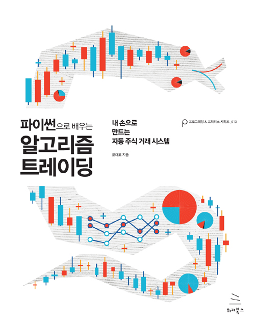
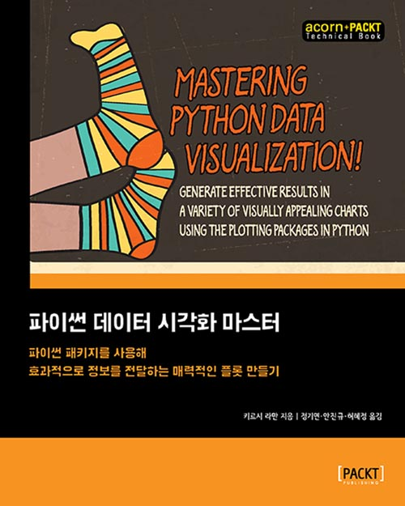

한국에서 일어나는 파이썬 관련 소식을 전합니다. (5월 첫 주는 연휴라서 쉬었습니다.)
블로그
(번역) 파이썬 ASYNCIO 를 이해하기 위한 여정 by 이승현 님
파이썬 3.4에 도입된 Asynchronous IO는 동기식 프로그래밍에 익숙한 사람들에겐 개념이 잘 와닿지 않는 편입니다. 이를 node.js의 코드와 비교하여 설명한 Understanding Asynchronous IO With Python 3.4's Asyncio And Node.js 글을 이승현 님이 번역하였습니다.
(NDC) Python 게임 서버 안녕하십니까 by 박준철 님
파이썬으로 만든 게임 서버의 성능 향상을 위한 노력과 그 결과를 박준철 님이 NDC 2017에서 공유하였습니다.
파이썬의 Comma(,) 사용팁 by mingrammer님
파이썬에서 다양하게 사용되는 쉼표(,)의 용례를 mingrammer님이 예시 코드와 함께 정리하였습니다.
Extended Iterable Unpacking - 어-썸한 파이썬의 맛을 보아라 by ulismoon님
파이썬의 이터레이터 언패킹에 대해 ulismoon님이 작동 원리를 살펴보았습니다.
신간
파이썬으로 배우는 알고리즘 트레이딩 by 위키북스

- 조대표 지음
- 40,000원
- 728쪽(1383g)
파이썬 데이터 시각화 마스터 by 에이콘

- 키르시 라만 지음
- 정기연, 안진규, 허혜정 옮김
- 35,000원
- 408쪽(775g)
파이썬으로 배우는 인공지능 by 에이콘

- 프라틱 조시 지음
- 남기혁, 윤여찬 옮김
- 40,000원
- 516쪽(980g)
구인
에셋플러스
자산운용사 에셋플러스에서 투자 알고리즘을 연구하고 개발할 파이썬 개발자를 구합니다.